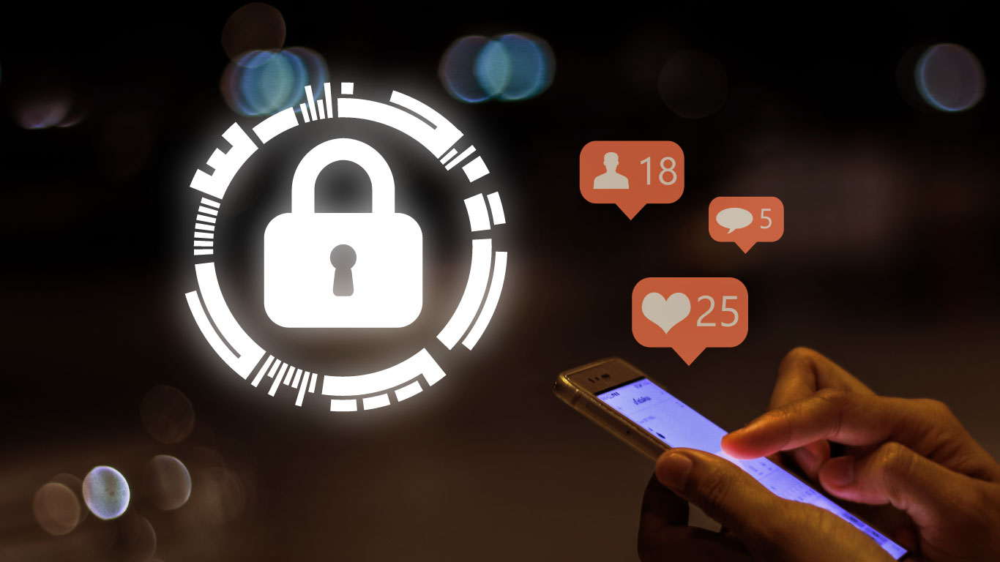

¿Qué es la seguridad en las redes sociales?

La seguridad en las redes sociales se refiere a las medidas y prácticas adoptadas para proteger la información personal y la privacidad de los usuarios en plataformas de redes sociales. Esto implica tomar precauciones para evitar el acceso no autorizado a la información, el uso indebido de los datos, el robo de identidad, el acoso y otros riesgos asociados con el uso de las redes sociales. Algunas medidas de seguridad en las redes sociales incluyen configurar la privacidad de tu cuenta, no aceptar solicitudes de amistad de desconocidos, usar contraseñas seguras, no compartir información personal sensible, tener cuidado con los enlaces y archivos adjuntos, y reportar y bloquear usuarios sospechosos. Es importante ajustar las opciones de privacidad en las redes sociales para controlar quién puede ver y acceder a tu información personal. Evita aceptar solicitudes de amistad de personas que no conoces en la vida real y utiliza contraseñas fuertes y únicas para tus cuentas de redes sociales. Además, evita publicar información personal sensible y ten cuidado al hacer clic en enlaces sospechosos o descargar archivos adjuntos de fuentes no confiables. Recuerda que la seguridad en las redes sociales es responsabilidad tanto de los usuarios como de las plataformas. Es importante estar consciente de los riesgos y tomar medidas para proteger tu información y privacidad en línea.